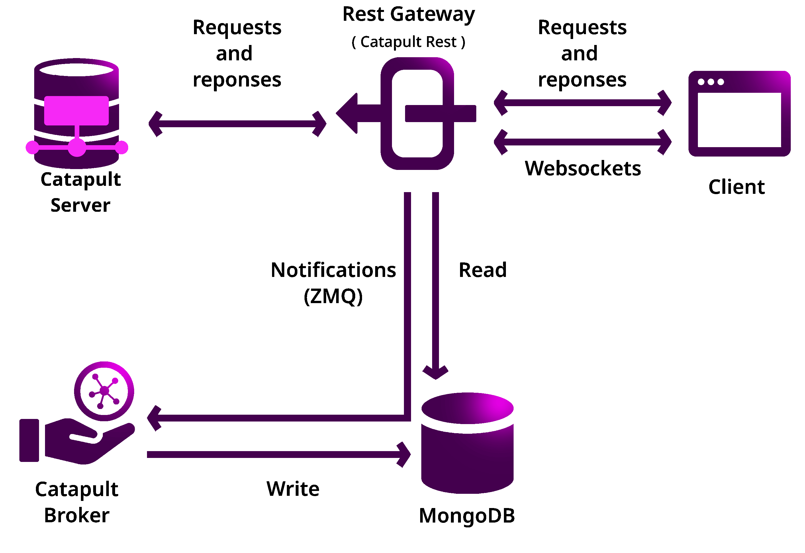

<!DOCTYPE html>


<html lang="ja">
  <head>
    <meta charset="utf-8" />
    <meta name="viewport" content="width=device-width, initial-scale=1.0" /><meta name="generator" content="Docutils 0.18: http://docutils.sourceforge.net/" />

    <title>手動によるノードの立ち上げ &#8212; Symbol Documentation</title>
    <link rel="stylesheet" type="text/css" href="../../_static/pygments.css" />
    <link rel="stylesheet" type="text/css" href="../../_static/bootstrap-sphinx.css" />
    <link rel="stylesheet" type="text/css" href="https://use.fontawesome.com/releases/v5.2.0/css/all.css" />
    <link rel="stylesheet" type="text/css" href="../../_static/css/custom.css" />
    <link rel="stylesheet" type="text/css" href="../../_static/tabs.css" />
    <link rel="stylesheet" type="text/css" href="../../_static/examplecode.css" />
    <script data-url_root="../../" id="documentation_options" src="../../_static/documentation_options.js"></script>
    <script src="../../_static/jquery.js"></script>
    <script src="../../_static/underscore.js"></script>
    <script src="../../_static/_sphinx_javascript_frameworks_compat.js"></script>
    <script src="../../_static/doctools.js"></script>
    <script src="../../_static/sphinx_highlight.js"></script>
    <script src="../../_static/js/custom.js"></script>
    <script src="../../_static/translations.js"></script>
    <script src="../../_static/examplecode.js"></script>
    <script src="../../_static/js/jquery-1.11.0.min.js"></script>
    <script src="../../_static/js/jquery-fix.js"></script>
    <script src="../../_static/bootstrap-3.3.7/js/bootstrap.min.js"></script>
    <script src="../../_static/bootstrap-sphinx.js"></script>
    <link rel="shortcut icon" href="../../_static/favicon.ico"/>
    <link rel="index" title="索引" href="../../genindex.html" />
    <link rel="search" title="検索" href="../../search.html" />
    <link rel="next" title="セキュアなノードの立ち上げ" href="running-a-secure-symbol-node.html" />
    <link rel="prev" title="ノードの立ち上げ" href="running-a-symbol-node.html" /> 
<meta charset='utf-8'>
<meta http-equiv='X-UA-Compatible' content='IE=edge,chrome=1'>
<meta name='viewport' content='width=device-width, initial-scale=1.0, maximum-scale=5'>
<meta name="apple-mobile-web-app-capable" content="yes">
<link rel="stylesheet" href="https://cdn.jsdelivr.net/npm/@docsearch/css@3" />
<!-- Global site tag (gtag.js) - Google Analytics -->
<script async src="https://www.googletagmanager.com/gtag/js?id=UA-174021413-2"></script>
<script>
  window.dataLayer = window.dataLayer || [];
  function gtag(){dataLayer.push(arguments);}
  gtag('js', new Date());
  gtag('config', 'UA-174021413-2');
</script>
 
<link
  rel="alternate"
  type="application/atom+xml"
  href="../../guides/atom.xml"
  title="Blog"
/>
 
<style type="text/css">
  ul.ablog-archive {
    list-style: none;
    overflow: auto;
    margin-left: 0px;
  }
  ul.ablog-archive li {
    float: left;
    margin-right: 5px;
    font-size: 80%;
  }
  ul.postlist a {
    font-style: italic;
  }
  ul.postlist-style-disc {
    list-style-type: disc;
  }
  ul.postlist-style-none {
    list-style-type: none;
  }
  ul.postlist-style-circle {
    list-style-type: circle;
  }
</style>

  </head><body>

<div class="hidden-xs hidden-sm navbar navbar-default header navbar-fixed-top"
     id="navbar">
    <div class="container navbar-main">
        <a href="../../index.html" class="navbar-brand">
            
        </a>
        <div class="navbar-right">
            
<ul class="list-inline">
    <li class="">
        <a href="/ja/getting-started">START</a>
    </li>
    <li class="">
        <a href="/ja/concepts/overview.html">TECHNOLOGY</a>
    </li>
    <li class="active">
        <a href="/ja/guides/index.html">GUIDES</a>
    </li>
    <li class="">
        <a href="/ja/handbook/vision.html">VISION</a>
    </li>
    <li class="">
        <a href="/ja/contribute/index.html">CONTRIBUTE</a>
    </li>
    <li class="">
        <a href="/ja/handbook/index.html">HANDBOOK</a>
    </li>
</ul>

        </div>
        
        <div class="search-box" id="search-box-desktop"></div>
        
        <div class="language-selector">
    
        <a href="/guides/network/running-a-symbol-node-manually.html"></a>
        
    
</div>
    </div>
</div>
<div class="hidden-md hidden-lg navbar navbar-default header navbar-fixed-top">
    <div class="container navbar-main">
        <a href="../../index.html" class="navbar-brand">
            
        </a>
        
        <div class="search-box" id="search-box-mobile"></div>
        
        <div class="language-selector">
    
        <a href="/guides/network/running-a-symbol-node-manually.html"></a>
        
    
</div>
    </div>
    <div class="sidebar-xs">
        <div class="dropdown">
            <a href="#" class="dropdown-toggle" data-toggle="dropdown">ナビゲーション <b
                    class="caret"></b></a>
            <ul class="dropdown-menu globaltoc"><ul class="current">
<li class="toctree-l1"><a class="reference internal" href="../../getting-started/index.html">入門</a></li>
<li class="toctree-l1"><a class="reference internal" href="../../concepts/overview.html">Technology</a></li>
<li class="toctree-l1 current"><a class="reference internal" href="../index.html">ガイド</a><ul class="current">
<li class="toctree-l2"><a class="reference internal" href="../account/index.html">アカウント</a></li>
<li class="toctree-l2"><a class="reference internal" href="../aggregate/index.html">アグリゲートトランザクション</a></li>
<li class="toctree-l2"><a class="reference internal" href="../blockchain/index.html">ブロックチェーン</a></li>
<li class="toctree-l2"><a class="reference internal" href="../harvesting/index.html">ハーベスティング</a></li>
<li class="toctree-l2"><a class="reference internal" href="../metadata/index.html">メタデータ</a></li>
<li class="toctree-l2"><a class="reference internal" href="../migration/index.html">NIS1 からのマイグレーション</a></li>
<li class="toctree-l2"><a class="reference internal" href="../monitor/index.html">モニタリング</a></li>
<li class="toctree-l2"><a class="reference internal" href="../mosaic/index.html">モザイク</a></li>
<li class="toctree-l2"><a class="reference internal" href="../multisig/index.html">マルチシグアカウント</a></li>
<li class="toctree-l2"><a class="reference internal" href="../namespace/index.html">ネームスペース</a></li>
<li class="toctree-l2 current"><a class="reference internal" href="index.html">ネットワーク</a><ul class="current">
<li class="toctree-l3"><a class="reference internal" href="using-symbol-bootstrap.html">Symbol Bootstrap の使用</a></li>
<li class="toctree-l3"><a class="reference internal" href="running-a-symbol-node.html">ノードの立ち上げ</a></li>
<li class="toctree-l3 current"><a class="current reference internal" href="#">手動によるノードの立ち上げ</a></li>
<li class="toctree-l3"><a class="reference internal" href="running-a-secure-symbol-node.html">セキュアなノードの立ち上げ</a></li>
<li class="toctree-l3"><a class="reference internal" href="maintaining-a-symbol-node.html">ノードの維持管理</a></li>
<li class="toctree-l3"><a class="reference internal" href="non-custodial-node-setup.html">非カストディアルなノードのセットアップ</a></li>
<li class="toctree-l3"><a class="reference internal" href="creating-a-private-test-net.html">プライベートテストネットワーク</a></li>
<li class="toctree-l3"><a class="reference internal" href="configuring-node-properties.html">ノードプロパティ</a></li>
<li class="toctree-l3"><a class="reference internal" href="configuring-network-properties.html">ネットワークプロパティ</a></li>
<li class="toctree-l3"><a class="reference internal" href="connecting-to-mongodb.html">MongoDB への接続方法</a></li>
</ul>
</li>
<li class="toctree-l2"><a class="reference internal" href="../restriction/index.html">モザイク制限</a></li>
<li class="toctree-l2"><a class="reference internal" href="../secretlock/index.html">シークレットロック</a></li>
<li class="toctree-l2"><a class="reference internal" href="../transfer/index.html">転送</a></li>
<li class="toctree-l2"><a class="reference internal" href="../exchanges/index.html">交換</a></li>
</ul>
</li>
<li class="toctree-l1"><a class="reference internal" href="../../contribute/index.html">Contribute</a></li>
<li class="toctree-l1"><a class="reference internal" href="../../handbook/index.html">The Symbol Handbook</a></li>
<li class="toctree-l1"><a class="reference internal" href="../../references/index.html">リファレンス</a></li>
</ul>
</ul>
        </div>
    </div>
</div>

<div class="container">
    <div class="row">
        
        

<div class="col-md-3 hidden-xs hidden-sm">
    <div id="sidebar" class="bs-sidenav" role="complementary">
        
        <div class="sidebar-md hidden-xs hidden-sm">
    <h4>ナビゲーション</h4>
    <hr />
    <ul class="current">
<li class="toctree-l1"><a class="reference internal" href="../../getting-started/index.html">入門</a></li>
<li class="toctree-l1"><a class="reference internal" href="../../concepts/overview.html">Technology</a></li>
<li class="toctree-l1 current"><a class="reference internal" href="../index.html">ガイド</a><ul class="current">
<li class="toctree-l2"><a class="reference internal" href="../account/index.html">アカウント</a></li>
<li class="toctree-l2"><a class="reference internal" href="../aggregate/index.html">アグリゲートトランザクション</a></li>
<li class="toctree-l2"><a class="reference internal" href="../blockchain/index.html">ブロックチェーン</a></li>
<li class="toctree-l2"><a class="reference internal" href="../harvesting/index.html">ハーベスティング</a></li>
<li class="toctree-l2"><a class="reference internal" href="../metadata/index.html">メタデータ</a></li>
<li class="toctree-l2"><a class="reference internal" href="../migration/index.html">NIS1 からのマイグレーション</a></li>
<li class="toctree-l2"><a class="reference internal" href="../monitor/index.html">モニタリング</a></li>
<li class="toctree-l2"><a class="reference internal" href="../mosaic/index.html">モザイク</a></li>
<li class="toctree-l2"><a class="reference internal" href="../multisig/index.html">マルチシグアカウント</a></li>
<li class="toctree-l2"><a class="reference internal" href="../namespace/index.html">ネームスペース</a></li>
<li class="toctree-l2 current"><a class="reference internal" href="index.html">ネットワーク</a><ul class="current">
<li class="toctree-l3"><a class="reference internal" href="using-symbol-bootstrap.html">Symbol Bootstrap の使用</a></li>
<li class="toctree-l3"><a class="reference internal" href="running-a-symbol-node.html">ノードの立ち上げ</a></li>
<li class="toctree-l3 current"><a class="current reference internal" href="#">手動によるノードの立ち上げ</a></li>
<li class="toctree-l3"><a class="reference internal" href="running-a-secure-symbol-node.html">セキュアなノードの立ち上げ</a></li>
<li class="toctree-l3"><a class="reference internal" href="maintaining-a-symbol-node.html">ノードの維持管理</a></li>
<li class="toctree-l3"><a class="reference internal" href="non-custodial-node-setup.html">非カストディアルなノードのセットアップ</a></li>
<li class="toctree-l3"><a class="reference internal" href="creating-a-private-test-net.html">プライベートテストネットワーク</a></li>
<li class="toctree-l3"><a class="reference internal" href="configuring-node-properties.html">ノードプロパティ</a></li>
<li class="toctree-l3"><a class="reference internal" href="configuring-network-properties.html">ネットワークプロパティ</a></li>
<li class="toctree-l3"><a class="reference internal" href="connecting-to-mongodb.html">MongoDB への接続方法</a></li>
</ul>
</li>
<li class="toctree-l2"><a class="reference internal" href="../restriction/index.html">モザイク制限</a></li>
<li class="toctree-l2"><a class="reference internal" href="../secretlock/index.html">シークレットロック</a></li>
<li class="toctree-l2"><a class="reference internal" href="../transfer/index.html">転送</a></li>
<li class="toctree-l2"><a class="reference internal" href="../exchanges/index.html">交換</a></li>
</ul>
</li>
<li class="toctree-l1"><a class="reference internal" href="../../contribute/index.html">Contribute</a></li>
<li class="toctree-l1"><a class="reference internal" href="../../handbook/index.html">The Symbol Handbook</a></li>
<li class="toctree-l1"><a class="reference internal" href="../../references/index.html">リファレンス</a></li>
</ul>

</div>
        
    </div>
</div>


        
        <div class="col-md-7 content">
             <section id="running-a-node-manually">
<h1>手動によるノードの立ち上げ<a class="headerlink" href="#running-a-node-manually" title="この見出しへのパーマリンク"></a></h1>
<p>このガイドでは Symbol Bootstrap を <strong>使用せず</strong> に Symbol のネットワークへ参加するために、ノードをセットアップする方法を説明します。</p>
<p><a href="https://github.com/fboucquez/symbol-bootstrap" target="_blank">Symbol Bootstrap</a> は Symbol ノードを <strong>素早く立ち上げる</strong> のにとても便利なツールです。しかし、すべてのシナリオで有効 (または許可) されるとは限らない、 <a class="reference external" href="http://docker.com">Docker</a> と <a class="reference external" href="http://nodejs.org">node.js</a> の技術に依存しています。 <strong>このガイドでは遠回りをして</strong>  Symbol ノードを <strong>手動</strong> で立ち上げる方法を示します。Symbol Bootstrap を使用する場合は <a class="reference internal" href="running-a-symbol-node.html"><span class="doc">こちらのガイド</span></a> を参照してください。</p>
<p>次のセクションでは <a class="reference internal" href="../../concepts/node.html#peer-node"><span class="std std-ref">Peer ノード</span></a> を構築する方法について説明し、その次のセクションではノードを拡張して <a class="reference internal" href="../../concepts/node.html#api-node"><span class="std std-ref">API ノード</span></a> に変更します。</p>
<div class="admonition note">
<p class="admonition-title">注釈</p>
<p>以下の手順は <strong>Linux</strong> でのみ動作確認をしています。</p>
</div>
<section id="build-a-peer-node">
<h2>Peer ノードのビルド<a class="headerlink" href="#build-a-peer-node" title="この見出しへのパーマリンク"></a></h2>
<section id="build-the-client">
<h3>クライアントのビルド<a class="headerlink" href="#build-the-client" title="この見出しへのパーマリンク"></a></h3>
<p>Follow the <a class="reference external" href="https://github.com/symbol/symbol/tree/dev/client/catapult">Catapult client</a> instructions to <strong>build</strong> its binaries, either <a class="reference external" href="https://github.com/symbol/symbol/blob/main/client/catapult/docs/BUILD-manual.md">manually</a> or using <a class="reference external" href="https://github.com/symbol/symbol/blob/main/client/catapult/docs/BUILD-conan.md">Conan</a>.</p>
</section>
<section id="generate-keys">
<h3>キーの生成<a class="headerlink" href="#generate-keys" title="この見出しへのパーマリンク"></a></h3>
<p>Symbol ノードは正しく機能するために、複数の <a class="reference internal" href="../../concepts/cryptography.html#symbol-keys"><span class="std std-ref">キー</span></a> を必要とします。これらのキーは通常では <strong>ランダムに生成</strong> されるので、次の手順では、使用するものをいくつか作成していきます。</p>
<p><strong>この手順はセキュリティを強化するためにオフラインマシンで実行します。</strong></p>
<section id="main-remote-and-vrf">
<h4>Main, Remote, VRF<a class="headerlink" href="#main-remote-and-vrf" title="この見出しへのパーマリンク"></a></h4>
<p>前セクションで作成した <code class="docutils literal notranslate"><span class="pre">_build</span></code> ディレクトリ内から、次のコマンドを実行します:</p>
<div class="highlight-bash notranslate"><div class="highlight"><pre><span></span>./bin/catapult.tools.addressgen<span class="w"> </span>--count<span class="w"> </span><span class="m">3</span><span class="w"> </span>--network<span class="w"> </span>mainnet
</pre></div>
</div>
<p>これにより、次のような 3つの <a class="reference internal" href="../../concepts/cryptography.html#keypair"><span class="std std-ref">キーペア</span></a> が出力されます:</p>
<div class="highlight-text notranslate"><div class="highlight"><pre><span></span>address (public): NDPPBHSMLVEU75DNUMFX6GWPTGB6PP6AFQU7WSY
   address decoded: 68DEF09E4C5D494FF46DA30B7F1ACF9983E7BFC02C29FB4B
      public key: 1E886BA00B4F85DBC0B31DBB78DADFAA29945DF7290DB7A4243D94864483C627
      private key: 3DDDC333029BC8ACDB460435BBC71041D460B911725B03D6F93805521AAD60CB
</pre></div>
</div>
<p>各ブロック (上記で示したブロック) は <code class="docutils literal notranslate"><span class="pre">秘密鍵</span></code> 、<code class="docutils literal notranslate"><span class="pre">公開鍵</span></code> で構成されるキーペアと <code class="docutils literal notranslate"><span class="pre">アドレス</span></code> です。</p>
<p>後で使用するために <strong>一時テキストファイルへそれら全てをコピーして</strong> キーペア <strong>Main</strong>, <strong>Remote</strong> ,**VRF** にラベルを付けます。</p>
<div class="admonition note">
<p class="admonition-title">注釈</p>
<p>これらのキーのいずれかを <strong>すでに持っている</strong> 場合は、ランダムに生成されるキーの代わりに、それらを使用できます。</p>
<p>The most relevant scenario is when using a <strong>main account opted-in from a NIS1 account</strong>. In this case you can directly use the key obtained in the opt-in process as your <strong>Main</strong> key instead of the randomly-generated one.</p>
</div>
</section>
<section id="voting">
<h4>投票<a class="headerlink" href="#voting" title="この見出しへのパーマリンク"></a></h4>
<p>If your node is to be a <a class="reference internal" href="../../concepts/block.html#finalization"><span class="std std-ref">voting node</span></a> it must have linked a voting key for the period in which you intend to vote. This is interesting as voting nodes receive <a class="reference internal" href="../../concepts/reward-programs.html#voting-node-program"><span class="std std-ref">voting rewards</span></a>.</p>
<p>ただし、投票キーの生成は、以前の生成よりも少し複雑です:</p>
<ol class="arabic simple">
<li><p>Still from within the <code class="docutils literal notranslate"><span class="pre">_build</span></code> directory <strong>create another directory</strong> called <code class="docutils literal notranslate"><span class="pre">votingkeys</span></code>.</p></li>
</ol>
<aside class="sidebar">
<p class="sidebar-title">Epochs</p>
<p><a class="reference internal" href="../../concepts/block.html#finalization"><span class="std std-ref">Voting</span></a> occurs once every epoch. One voting epoch lasts <strong>1440 blocks</strong> or about <strong>12h</strong> (see <code class="docutils literal notranslate"><span class="pre">votingSetGrouping</span></code> in the <a class="reference internal" href="configuring-network-properties.html#config-network-properties"><span class="std std-ref">network properties</span></a>).</p>
<p>The maximum voting key duration (End Epoch - Start Epoch) is <strong>360 epochs</strong> or about <strong>6 months</strong> (see <code class="docutils literal notranslate"><span class="pre">maxVotingKeyLifetime</span></code>).</p>
<p>You can find out the current epoch by dividing the <a class="reference external" href="https://symbol.fyi">current blockchain height</a> by 1440 and discarding the decimals.</p>
</aside>
<ol class="arabic" start="2">
<li><p><strong>投票キーの作成</strong> (またはキー):</p>
<p>Voting keys are different from the other keys in that they have a <strong>period of validity</strong>, for example. They are only valid from a <strong>Start Epoch</strong> to an <strong>End Epoch</strong> (see side box).</p>
<p>Nodes are only eligible as voters if they are linked to a <strong>valid voting key</strong> for the current blockchain epoch, so <strong>remember to renew your voting key periodically.</strong></p>
<p>To help you with that task, you can have <strong>up to 3 linked voting keys</strong>, with different periods, so you can easily renew one key while there's still another one active (you will need to <strong>unlink</strong> an older key to be able to link more than 3 keys).</p>
<p>A voting key is created using <code class="docutils literal notranslate"><span class="pre">catapult.tools.votingkey</span></code> and providing its <strong>period of validity</strong> (note you do not use <code class="docutils literal notranslate"><span class="pre">catapult.tools.addressgen</span></code> as before):</p>
<div class="highlight-bash notranslate"><div class="highlight"><pre><span></span>bin/catapult.tools.votingkey<span class="w"> </span>--output<span class="w"> </span>votingkeys/private_key_tree1.dat<span class="w"> </span><span class="se">\</span>
<span class="w">                             </span>--startEpoch<span class="w"> </span><span class="m">100</span><span class="w"> </span>--endEpoch<span class="w"> </span><span class="m">460</span>
</pre></div>
</div>
<p>This creates a file named <code class="docutils literal notranslate"><span class="pre">votingkeys/private_key_tree1.dat</span></code> and <strong>prints the voting key on the terminal</strong>. As your voting keys expire and you create new ones, <strong>increase the number</strong> on the file name.</p>
<div class="highlight-text notranslate"><div class="highlight"><pre><span></span>generating 361 keys, this might take a while
votingkeys\private_key_tree1.dat generated
verifying generated file
 saved voting public key: ****************
loaded voting public key: ****************
</pre></div>
</div>
<p>Copy the voting key public key into the temporary text file where you keep the rest of the keys, label it <strong>Voting</strong> and save it for later.</p>
</li>
</ol>
<aside class="topic" id="manual-voting-key-renewal">
<p class="topic-title">投票キーの更新</p>
<p>登録されているすべての投票キーの有効期限が切れると、ノードは投票者としての資格を失い、そのアカウントは <a class="reference internal" href="../../concepts/reward-programs.html#voting-node-program"><span class="std std-ref">投票報酬</span></a> を受け取れません。</p>
<p><strong>現在のエポックに登録されている投票キーが常に 1 つはあることを確認してください。</strong></p>
<p>You can check your currently registered voting keys using the <code class="docutils literal notranslate"><span class="pre">/accounts</span></code> endpoint of the <a class="reference internal" href="../../api.html"><span class="doc">REST API</span></a> (Get Account Information), in the <code class="docutils literal notranslate"><span class="pre">supplementalPublicKeys</span></code> section.</p>
<p>If you need to renew your keys, create new ones as explained above and then register them as explained in the <a class="reference internal" href="#manual-enable-voting"><span class="std std-ref">Link the keys</span></a> section below.</p>
</aside>
</section>
</section>
<section id="configuration">
<h3>設定<a class="headerlink" href="#configuration" title="この見出しへのパーマリンク"></a></h3>
<p>Symbol is <strong>highly customizable</strong> and this means there are a lot of parameters that can be adjusted to suit your node's needs. Some of these parameters are <strong>network-related</strong> and must match the rest of nodes in the network (for example <code class="docutils literal notranslate"><span class="pre">currencyMosaicId</span></code>) whereas some others are <strong>node-related</strong> and you can set freely (for example <code class="docutils literal notranslate"><span class="pre">friendlyName</span></code>).</p>
<p>You can edit these files manually (Take a look at <a class="reference external" href="https://github.com/symbol/symbol/tree/main/client/catapult/resources">these templates</a> to know how they look) but it is more convenient to use the <a class="reference external" href="https://github.com/symbol/symbol-node-configurator">Symbol Node Configurator tool</a> as shown next.</p>
<p><strong>この設定手順はセキュリティを強化するためにオフラインマシンで実行します。</strong></p>
<ol class="arabic" start="0">
<li><p>&quot;&quot;前提条件&quot;&quot;</p>
<ul class="simple">
<li><p><a class="reference external" href="https://www.python.org/downloads/">Python 3</a>   のインストール</p></li>
<li><p><a class="reference external" href="https://wiki.openssl.org/index.php/Binaries">OpenSSL</a> (Linux での例 <code class="docutils literal notranslate"><span class="pre">sudo</span> <span class="pre">apt</span> <span class="pre">install</span> <span class="pre">openssl</span></code>) のインストール</p></li>
</ul>
</li>
<li><p><strong>symbol-node-configurator のインストール</strong></p>
<ul>
<li><p><a class="reference external" href="https://github.com/symbol/symbol-node-configurator/archive/refs/heads/main.zip">symbol-node-configurator.zip</a> をダウンロードして展開します。他にも <a class="reference external" href="https://github.com/symbol/symbol-node-configurator">GitHub リポジトリ</a> をクローンすることもできます。</p></li>
<li><p>Move into the <code class="docutils literal notranslate"><span class="pre">symbol-node-configurator</span></code> directory and install the tool's requirements by running:</p>
<div class="highlight-bash notranslate"><div class="highlight"><pre><span></span>python3<span class="w"> </span>-m<span class="w"> </span>pip<span class="w"> </span>install<span class="w"> </span>-r<span class="w"> </span>requirements.txt
</pre></div>
</div>
</li>
</ul>
</li>
</ol>
<ol class="arabic" id="manual-node-certificates" start="2">
<li><p><strong>証明書の作成</strong></p>
<ul class="simple">
<li><p><code class="docutils literal notranslate"><span class="pre">certificates</span></code> フォルダを作成して、そこへ移動します。</p></li>
<li><p><code class="docutils literal notranslate"><span class="pre">private.main.txt</span></code> としてテキストファイルを作成し、 <strong>メインアカウントの秘密鍵</strong> をその中に入れます。</p></li>
<li><p><a class="reference external" href="/_static/bash/cert-generate.sh">証明書生成スクリプト</a> をダウンロードして実行します。</p></li>
<li><p><code class="docutils literal notranslate"><span class="pre">private.main.txt</span></code> の削除</p></li>
<li><p>親フォルダへ戻る</p></li>
</ul>
<p>You should now have at least the following files in the <code class="docutils literal notranslate"><span class="pre">certificates</span></code> folder: <code class="docutils literal notranslate"><span class="pre">ca.pubkey.pem</span></code>, <code class="docutils literal notranslate"><span class="pre">ca.crt.pem</span></code>, <code class="docutils literal notranslate"><span class="pre">node.full.crt.pem</span></code>, <code class="docutils literal notranslate"><span class="pre">node.crt.pem</span></code> and <code class="docutils literal notranslate"><span class="pre">node.key.pem</span></code>.</p>
</li>
<li><p><strong>ハーベスタ と VRF キーファイルの作成</strong></p>
<ul class="simple">
<li><p><code class="docutils literal notranslate"><span class="pre">private.harvesting.txt</span></code> という名前のファイルを作成し <strong>リモート秘密鍵</strong> をその中に入れます。</p></li>
<li><p><code class="docutils literal notranslate"><span class="pre">private.vrf.txt</span></code> という名前のファイルを作成し <strong>VRF 秘密鍵</strong> をその中に入れます。</p></li>
</ul>
</li>
<li><p><strong>設定ツールの実行</strong></p>
<p>generator.py というノードコンフィギュレータツールは、必要なノードの種類に応じて、いくつかのパラメータを指定できます。</p>
<table class="docutils align-default">
<colgroup>
<col style="width: 30%" />
<col style="width: 70%" />
</colgroup>
<thead>
<tr class="row-odd"><th class="head"><p>パラメタ</p></th>
<th class="head"><p>説明</p></th>
</tr>
</thead>
<tbody>
<tr class="row-even"><td><p><code class="docutils literal notranslate"><span class="pre">--mode</span></code></p></td>
<td><p>(必須) ノードタイプ。 <code class="docutils literal notranslate"><span class="pre">api</span></code>, <code class="docutils literal notranslate"><span class="pre">peer</span></code>,  <code class="docutils literal notranslate"><span class="pre">dual</span></code> のみ許可されます。</p></td>
</tr>
<tr class="row-odd"><td><p><code class="docutils literal notranslate"><span class="pre">--harvesting</span></code></p></td>
<td><p>(Optional) To create a harvesting node. The <strong>Remote</strong> key will automatically be used so that <a class="reference internal" href="../../concepts/harvesting.html#remote-harvesting"><span class="std std-ref">リモートハーベスティング</span></a> is enabled by default.</p></td>
</tr>
<tr class="row-even"><td><p><code class="docutils literal notranslate"><span class="pre">--voting</span></code></p></td>
<td><p>(Optional) To create a voting node. If you enable this copy the <code class="docutils literal notranslate"><span class="pre">private_key_tree1.dat</span></code> file you created above into this directory.</p></td>
</tr>
<tr class="row-odd"><td><p><code class="docutils literal notranslate"><span class="pre">--output</span></code></p></td>
<td><p>(オプション) 設定を保存するフォルダ。</p></td>
</tr>
</tbody>
</table>
<p>例:</p>
<div class="highlight-text notranslate"><div class="highlight"><pre><span></span>python3 generator.py --mode dual --harvesting --voting --output settings
  i     | extracting nemesis seed
  i     | preparing base settings
  i     | turning on harvesting
  i     | turning on voting
  i     | extracting mongo scripts
  i     | copying certificates
  i     | moving private_key_tree1.dat
</pre></div>
</div>
<p>This command will produce all the required <strong>node configuration</strong> files in the <code class="docutils literal notranslate"><span class="pre">settings</span></code> directory and you need to copy them to <code class="docutils literal notranslate"><span class="pre">_build</span></code>, in the machine where your node will run:</p>
<ul class="simple">
<li><p><code class="docutils literal notranslate"><span class="pre">settings/resources</span></code> を <code class="docutils literal notranslate"><span class="pre">_build/resources</span></code> へコピーします。</p></li>
<li><p><code class="docutils literal notranslate"><span class="pre">settings/certificates</span></code> を <code class="docutils literal notranslate"><span class="pre">_build/certificates</span></code> へコピーします。</p></li>
<li><p><code class="docutils literal notranslate"><span class="pre">settings/nemesis/seed</span></code> を <code class="docutils literal notranslate"><span class="pre">_build/seed</span></code> へコピーします。 (<code class="docutils literal notranslate"><span class="pre">nemesis</span></code> の部分を除去します)</p></li>
</ul>
</li>
<li><p><strong>config-user.properties</strong> を編集</p>
<ul>
<li><p><code class="docutils literal notranslate"><span class="pre">_build</span></code> ディレクトリへ戻ります。</p></li>
<li><p>適切な場所を指すよう <code class="docutils literal notranslate"><span class="pre">resources/config-user.properties</span></code> 編集にします:</p>
<div class="highlight-ini notranslate"><div class="highlight"><pre><span></span><span class="k">[storage]</span>

<span class="na">seedDirectory</span><span class="w"> </span><span class="o">=</span><span class="w"> </span><span class="s">../seed</span>
<span class="na">certificateDirectory</span><span class="w"> </span><span class="o">=</span><span class="w"> </span><span class="s">../certificates</span>
<span class="na">dataDirectory</span><span class="w"> </span><span class="o">=</span><span class="w"> </span><span class="s">../data</span>
<span class="na">pluginsDirectory</span><span class="w"> </span><span class="o">=</span><span class="w"> </span><span class="s">../lib</span>
<span class="na">votingKeysDirectory</span><span class="w"> </span><span class="o">=</span><span class="w"> </span><span class="s">../votingkeys</span>
</pre></div>
</div>
</li>
</ul>
</li>
<li><p><strong>config-node.properties</strong> を編集</p>
<p>Edit <code class="docutils literal notranslate"><span class="pre">resources/config-node.properties</span></code> to customize the node. Learn more about the available properties in the <a class="reference internal" href="configuring-node-properties.html"><span class="doc">ノードプロパティ</span></a> guide.</p>
<p>最も一般的なものは <code class="docutils literal notranslate"><span class="pre">[localnode]</span></code> セクションにあります:</p>
<table class="docutils align-default">
<colgroup>
<col style="width: 30%" />
<col style="width: 70%" />
</colgroup>
<thead>
<tr class="row-odd"><th class="head"><p>プロパティ</p></th>
<th class="head"><p>説明</p></th>
</tr>
</thead>
<tbody>
<tr class="row-even"><td><p><code class="docutils literal notranslate"><span class="pre">host</span></code></p></td>
<td><p>IP アドレスまたはノードのドメインネーム</p></td>
</tr>
<tr class="row-odd"><td><p><code class="docutils literal notranslate"><span class="pre">friendlyName</span></code></p></td>
<td><p>表示用のノード名</p></td>
</tr>
<tr class="row-even"><td><p><code class="docutils literal notranslate"><span class="pre">version</span></code></p></td>
<td><p>ノードで使用されている catapult-client のバージョン。現在のものを使用するには、空のままにします。</p></td>
</tr>
<tr class="row-odd"><td><p><code class="docutils literal notranslate"><span class="pre">roles</span></code></p></td>
<td><p>次の値のコンマ区切りのリスト: <code class="docutils literal notranslate"><span class="pre">Peer</span></code>, <code class="docutils literal notranslate"><span class="pre">Api</span></code>, <code class="docutils literal notranslate"><span class="pre">Voting</span></code>, <code class="docutils literal notranslate"><span class="pre">IPv4</span></code>, <code class="docutils literal notranslate"><span class="pre">IPv6</span></code></p></td>
</tr>
</tbody>
</table>
<p>例:</p>
<div class="highlight-ini notranslate"><div class="highlight"><pre><span></span><span class="k">[localnode]</span>
<span class="na">host</span><span class="w"> </span><span class="o">=</span><span class="w"> </span><span class="s">&lt;YOUR_NODE_IP&gt;</span>
<span class="na">friendlyName</span><span class="w"> </span><span class="o">=</span><span class="w"> </span><span class="s">myPeerNode</span>
<span class="na">version</span><span class="w"> </span><span class="o">=</span><span class="w"> </span><span class="s">1.0.0.0</span>
<span class="na">roles</span><span class="w"> </span><span class="o">=</span><span class="w"> </span><span class="s">IPv4,Peer</span>
</pre></div>
</div>
</li>
</ol>
</section>
<section id="run-the-client">
<h3>クライアントの起動<a class="headerlink" href="#run-the-client" title="この見出しへのパーマリンク"></a></h3>
<p>最後の一つのフォルダを作成:</p>
<div class="highlight-bash notranslate"><div class="highlight"><pre><span></span>mkdir<span class="w"> </span>data
</pre></div>
</div>
<p>最後に、クライアントに火入れします！</p>
<div class="highlight-bash notranslate"><div class="highlight"><pre><span></span><span class="nb">cd</span><span class="w"> </span>bin
./catapult.server
</pre></div>
</div>
<p>You should see a lot of debug output while the node starts synchronizing with the rest of the network:</p>
<div class="highlight-text notranslate"><div class="highlight"><pre><span></span>... peer returned 42 blocks (heights 2 - 43)
</pre></div>
</div>
<p>The node can be stopped by pressing <kbd class="kbd compound docutils literal notranslate"><kbd class="kbd docutils literal notranslate">Ctrl</kbd>-<kbd class="kbd docutils literal notranslate">C</kbd></kbd> and restarted simply by running <code class="docutils literal notranslate"><span class="pre">catapult.server</span></code> again.</p>
<p>If you see no error messages, your client is up and running and you can continue with this guide.</p>
</section>
<section id="link-the-keys">
<h3>キーのリンク<a class="headerlink" href="#link-the-keys" title="この見出しへのパーマリンク"></a></h3>
<p>The client is now running but it will not be able <strong>harvest</strong> because a number of <a class="reference internal" href="../../concepts/cryptography.html#symbol-keys"><span class="std std-ref">keys</span></a> need to be <strong>linked</strong> to it. These links are created through <strong>transactions announced to the network</strong>.</p>
<p><strong>These transactions can be announced from ANY machine</strong>. In particular, this can be done from a machine other than the one running your node so your main account's private key is never stored on the node.</p>
<p><a class="reference internal" href="../../cli.html"><span class="doc">symbol-cli</span></a> を使用します。 <code class="docutils literal notranslate"><span class="pre">symbol-cli</span></code> を <strong>インストール</strong> してください:</p>
<div class="highlight-bash notranslate"><div class="highlight"><pre><span></span>npm<span class="w"> </span>install<span class="w"> </span>--global<span class="w"> </span>symbol-cli
</pre></div>
</div>
<p>All transactions will be sent from (and the <a class="reference internal" href="../../concepts/fees.html"><span class="doc">手数料</span></a> paid by) your <strong>main</strong> account, so you need to tell <code class="docutils literal notranslate"><span class="pre">symbol-cli</span></code> about it by creating a <strong>profile</strong>.</p>
<div class="admonition note">
<p class="admonition-title">注釈</p>
<p>This profile will contain your <strong>main account's private key</strong> in <strong>encrypted</strong> form. A password will be requested every time it is accessed.</p>
<p>プロファイルは  <code class="docutils literal notranslate"><span class="pre">~/symbol-cli.config.json</span></code> に保存されます。symbol-cli を使い終わったら、このファイルは削除してもよいです。</p>
</div>
<p>Your node's API server is not running yet (this will be done later) so you cannot use it to announce transactions. Fortunately, you have a <strong>list of available API nodes</strong> in the network in <code class="docutils literal notranslate"><span class="pre">../resources/peers-api.json</span></code>.</p>
<ul class="simple">
<li><p>Open this file and pick any of the hosts listed in the lines starting with <code class="docutils literal notranslate"><span class="pre">&quot;host&quot;:</span></code>. You will use this in the next command instead of <code class="docutils literal notranslate"><span class="pre">HOST</span></code>.</p></li>
</ul>
<p>実行:</p>
<div class="highlight-symbol-cli notranslate"><div class="highlight"><pre><span></span>$ symbol-cli profile import --network MAIN_NET --url http://HOST:3000 --default
<span class="gi">✔ </span>Enter a profile name: ... Main
<span class="gi">✔ </span>Enter your wallet password: ... *********
<span class="gi">✔ </span>Select an import type: › PrivateKey
<span class="gi">✔ </span>Enter your account private key: ... ********************************
</pre></div>
</div>
<ul class="simple">
<li><p>プロファイル名を入力します (例 <code class="docutils literal notranslate"><span class="pre">メイン</span></code> )</p></li>
<li><p>プロファイルを保護するためにパスワードを入力します。</p></li>
<li><p>インポートタイプとして <code class="docutils literal notranslate"><span class="pre">秘密鍵</span></code> を選択します。</p></li>
<li><p><strong>メイン</strong> 秘密鍵を入力します。</p></li>
</ul>
<p>The profile information is stored (encrypted) in <code class="docutils literal notranslate"><span class="pre">~/symbol-cli.config.json</span></code> and <code class="docutils literal notranslate"><span class="pre">symbol-cli</span></code> is now ready to use.</p>
<div class="admonition note">
<p class="admonition-title">注釈</p>
<p>All the key links created in the next subsections can be <strong>undone</strong> at any time by announcing an equivalent <strong>unlink</strong> transaction (<code class="docutils literal notranslate"><span class="pre">--action</span> <span class="pre">Unlink</span></code>). Therefore you can always mend any mistake or change your node configuration (Each transaction has a <a class="reference internal" href="../../concepts/fees.html"><span class="doc">fee</span></a>, though).</p>
</div>
<section id="remote-key">
<h4>リモートキー<a class="headerlink" href="#remote-key" title="この見出しへのパーマリンク"></a></h4>
<p>You configured the node to sign created blocks using the <strong>Remote</strong> key, but the harvesting fees should go to your <strong>Main</strong> account. This is accomplished by announcing an <a class="reference internal" href="../../serialization/index.html#accountkeylinktransaction"><span class="std std-ref">AccountKeyLinkTransaction</span></a>:</p>
<div class="highlight-symbol-cli notranslate"><div class="highlight"><pre><span></span>symbol-cli transaction accountkeylink --sync --action Link \
           --max-fee 1000000 --mode normal
<span class="gi">✔ </span>Enter your wallet password: ... *********
<span class="gi">✔ </span>Enter the public key of the remote account:  ********************************
</pre></div>
</div>
<ul class="simple">
<li><p>プロファイルのパスワードを入力します。</p></li>
<li><p><strong>リモート公開</strong> 鍵を入力します。</p></li>
</ul>
<div class="highlight-symbol-cli notranslate"><div class="highlight"><pre><span></span>...
<span class="gi">✔ </span>Do you want to announce this transaction? ... yes
<span class="gi">SUCCESS </span>Transaction announced
<span class="gi">SUCCESS </span>Transaction confirmed
</pre></div>
</div>
</section>
<section id="vrf-key">
<h4>VRF キー<a class="headerlink" href="#vrf-key" title="この見出しへのパーマリンク"></a></h4>
<p>In order to be <a class="reference internal" href="../../concepts/harvesting.html#account-eligibility"><span class="std std-ref">eligible for harvesting</span></a> an account must have linked a VRF key. This is accomplished by announcing a <a class="reference internal" href="../../serialization/index.html#vrfkeylinktransaction"><span class="std std-ref">VrfKeyLinkTransaction</span></a>:</p>
<div class="highlight-symbol-cli notranslate"><div class="highlight"><pre><span></span>symbol-cli transaction vrfkeylink --sync --action Link \
                       --max-fee 1000000 --mode normal
<span class="gi">✔ </span>Enter your wallet password: ... *********
<span class="gi">✔ </span>Enter the public key to link: ... ********************************
</pre></div>
</div>
<ul class="simple">
<li><p><strong>VRF 公開</strong> 鍵を入力します。</p></li>
</ul>
</section>
<section id="voting-key">
<span id="manual-enable-voting"></span><h4>投票キー<a class="headerlink" href="#voting-key" title="この見出しへのパーマリンク"></a></h4>
<p>If your node is to be a <a class="reference internal" href="../../concepts/block.html#finalization"><span class="std std-ref">voting node</span></a> it must link the voting key you generated above. The link is accomplished by announcing a <a class="reference internal" href="../../serialization/index.html#votingkeylinktransaction"><span class="std std-ref">VotingKeyLinkTransaction</span></a>:</p>
<div class="highlight-symbol-cli notranslate"><div class="highlight"><pre><span></span>symbol-cli transaction votingkeylink --sync --action Link \
            --max-fee 1000000 --mode normal
<span class="gi">✔ </span>Enter your wallet password: ... *********
<span class="gi">✔ </span>Enter the public key of the voting key account:  ****************
<span class="gi">✔ </span>Enter the start point: ... 100
<span class="gi">✔ </span>Enter the end point: ... 460
</pre></div>
</div>
<ul class="simple">
<li><p>プロファイルのパスワードを入力します。</p></li>
<li><p>直前で取得した <strong>投票公開キー</strong> を入力します。</p></li>
<li><p>投票キーの作成時に使用した開始エポックと終了エポックを入力します。</p></li>
</ul>
<div class="highlight-symbol-cli notranslate"><div class="highlight"><pre><span></span>...
<span class="gi">✔ </span>Do you want to announce this transaction? ... yes
<span class="gi">SUCCESS </span>Transaction announced
<span class="gi">SUCCESS </span>Transaction confirmed
</pre></div>
</div>
<p>When the next epoch starts, if it is inside the Start and End epochs of one of your registered keys, your node should participate in the <a class="reference internal" href="../../concepts/block.html#finalization"><span class="std std-ref">finalization process</span></a> and collect <a class="reference internal" href="../../concepts/reward-programs.html#voting-node-program"><span class="std std-ref">voting rewards</span></a>.</p>
<div class="admonition note">
<p class="admonition-title">注釈</p>
<p>Every epoch, more than <strong>67%</strong> of all eligible voting nodes need to cast their votes or <strong>finalization stalls</strong>.</p>
<p>Therefore, <strong>if you are planning to take your node offline</strong> for a long time it is important that you <strong>unlink your voting keys</strong> for that period so that finalization is not affected.</p>
</div>
</section>
</section>
</section>
<section id="build-an-api-node">
<h2>API ノードのビルド<a class="headerlink" href="#build-an-api-node" title="この見出しへのパーマリンク"></a></h2>
<p>Catapult クライアントを実行したら <strong>追加サービス</strong> を追加して API ノードに変えることができます:</p>
<figure class="align-center">

</figure>
<p>As shown in the diagram above, besides the <strong>Catapult client</strong> you will also need:</p>
<ul class="simple">
<li><p><strong>データベース</strong> は REST データを保持します。</p></li>
<li><p>A <strong>Catapult Broker</strong> serializing accesses to the database.</p></li>
<li><p>A <strong>REST gateway</strong> accepting requests and turning them into Catapult client commands or database queries.</p></li>
</ul>
<p>次のセクションでは、各サービスのインストール方法について説明します。それらのすべてが必要になります。</p>
<p>Move to the <code class="docutils literal notranslate"><span class="pre">_build</span></code> folder created while building the client and create any additional folders requested in the next steps inside <code class="docutils literal notranslate"><span class="pre">_build</span></code>.</p>
<section id="run-the-database">
<h3>データベースの実行<a class="headerlink" href="#run-the-database" title="この見出しへのパーマリンク"></a></h3>
<ol class="arabic">
<li><p><strong>インストール</strong> <a class="reference external" href="http://mongodb.com">MongoDB</a> (バージョン 4.4 以上)</p>
<p>It is recommended to follow the <a class="reference external" href="https://docs.mongodb.com/manual/administration/install-community/">program's own installation instructions</a>, and NOT install from your distro's packages.</p>
</li>
<li><p>データファイルを保存するディレクトリを作成して <strong>データベースを実行</strong> します:</p>
<div class="highlight-bash notranslate"><div class="highlight"><pre><span></span>mkdir<span class="w"> </span>dbfiles
mongod<span class="w"> </span>--dbpath<span class="o">=</span>dbfiles<span class="w"> </span>--wiredTigerCacheSizeGB<span class="w"> </span><span class="m">2</span><span class="w"> </span>--bind_ip<span class="w"> </span><span class="m">127</span>.0.0.1
</pre></div>
</div>
<p>ノードが実行されている限り、 <code class="docutils literal notranslate"><span class="pre">mongod</span></code> を実行し続けます。</p>
</li>
<li><p>データベースアクセスの最適化のために <strong>インデックス構築</strong> をします。</p>
<p>The <code class="docutils literal notranslate"><span class="pre">catapult-client</span></code> repository you cloned to build the client in the first step contains <a class="reference external" href="https://github.com/symbol/symbol/blob/main/client/catapult/scripts/mongo">a folder with mongo scripts</a>. Run this one:</p>
<div class="highlight-bash notranslate"><div class="highlight"><pre><span></span>mongo<span class="w"> </span><span class="m">127</span>.0.0.1/catapult<span class="w"> </span>&lt;<span class="w"> </span>../scripts/mongo/mongoDbPrepare.js
</pre></div>
</div>
<p>この手順を実施しないと、データベースのパフォーマンスが許容できないほど遅くなります。</p>
</li>
</ol>
</section>
<section id="run-the-broker">
<h3>ブローカーの起動<a class="headerlink" href="#run-the-broker" title="この見出しへのパーマリンク"></a></h3>
<ol class="arabic" start="4">
<li><p><code class="docutils literal notranslate"><span class="pre">resources/config-database.properties</span></code> を <strong>編集</strong> して <code class="docutils literal notranslate"><span class="pre">databaseUri</span></code> で <code class="docutils literal notranslate"><span class="pre">127.0.0.1:27017</span></code> に向けます:</p>
<div class="highlight-ini notranslate"><div class="highlight"><pre><span></span><span class="k">[database]</span>

<span class="na">databaseUri</span><span class="w"> </span><span class="o">=</span><span class="w"> </span><span class="s">mongodb://127.0.0.1:27017</span>
<span class="na">databaseName</span><span class="w"> </span><span class="o">=</span><span class="w"> </span><span class="s">catapult</span>
</pre></div>
</div>
</li>
<li><p><strong>ブローカーの起動</strong>:</p>
<p><code class="docutils literal notranslate"><span class="pre">bin</span></code> ディレクトリへ移動して実行します:</p>
<div class="highlight-bash notranslate"><div class="highlight"><pre><span></span>./catapult.broker<span class="w"> </span>..
</pre></div>
</div>
<p>ノードが実行されている限り、ブローカーを実行し続けます。</p>
</li>
</ol>
</section>
<section id="build-and-run-the-rest-gateway">
<h3>REST ゲートウェイのビルドと実行<a class="headerlink" href="#build-and-run-the-rest-gateway" title="この見出しへのパーマリンク"></a></h3>
<ol class="arabic" start="6">
<li><p><code class="docutils literal notranslate"><span class="pre">catapult-rest</span></code> リポジトリを <strong>クローン</strong>  して <strong>依存関係をインストール</strong> します:</p>
<p>(最初に <code class="docutils literal notranslate"><span class="pre">_build</span></code> ディレクトリへ戻ります)</p>
<div class="highlight-bash notranslate"><div class="highlight"><pre><span></span><span class="nb">cd</span><span class="w"> </span>..
git<span class="w"> </span>clone<span class="w"> </span>https://github.com/symbol/symbol
<span class="nb">cd</span><span class="w"> </span>symbol/client/rest
</pre></div>
</div>
</li>
<li><p>REST ゲートウェイの <strong>ビルド</strong> :</p>
<div class="highlight-bash notranslate"><div class="highlight"><pre><span></span>npm<span class="w"> </span>install
</pre></div>
</div>
</li>
<li><p>REST ゲートウェイの <strong>設定</strong> :</p>
<p>すべての設定は <code class="docutils literal notranslate"><span class="pre">resources/rest.json</span></code> ファイルに記述されます。</p>
<p><strong>このファイルを編集</strong> して、次のプロパティが正しいファイルを指していることを確認します。</p>
<table class="docutils align-default">
<colgroup>
<col style="width: 35%" />
<col style="width: 35%" />
<col style="width: 30%" />
</colgroup>
<thead>
<tr class="row-odd"><th class="head"><p>プロパティ</p></th>
<th class="head"><p>ファイル</p></th>
<th class="head"><p>デフォルトの場所</p></th>
</tr>
</thead>
<tbody>
<tr class="row-even"><td><p><code class="docutils literal notranslate"><span class="pre">tlsClientCertificatePath</span></code></p></td>
<td><p><code class="docutils literal notranslate"><span class="pre">node.crt.pem</span></code></p></td>
<td><p><code class="docutils literal notranslate"><span class="pre">_build/certificate/</span></code></p></td>
</tr>
<tr class="row-odd"><td><p><code class="docutils literal notranslate"><span class="pre">tlsClientKeyPath</span></code></p></td>
<td><p><code class="docutils literal notranslate"><span class="pre">node.key.pem</span></code></p></td>
<td><p><code class="docutils literal notranslate"><span class="pre">_build/certificate/</span></code></p></td>
</tr>
<tr class="row-even"><td><p><code class="docutils literal notranslate"><span class="pre">tlsCaCertificatePath</span></code></p></td>
<td><p><code class="docutils literal notranslate"><span class="pre">ca.crt.pem</span></code></p></td>
<td><p><code class="docutils literal notranslate"><span class="pre">_build/certificate/</span></code></p></td>
</tr>
<tr class="row-odd"><td><p><code class="docutils literal notranslate"><span class="pre">networkPropertyFilePath</span></code></p></td>
<td><p><code class="docutils literal notranslate"><span class="pre">config-network.properties</span></code></p></td>
<td><p><code class="docutils literal notranslate"><span class="pre">_build/resources/</span></code></p></td>
</tr>
<tr class="row-even"><td><p><code class="docutils literal notranslate"><span class="pre">nodePropertyFilePath</span></code></p></td>
<td><p><code class="docutils literal notranslate"><span class="pre">config-node.properties</span></code></p></td>
<td><p><code class="docutils literal notranslate"><span class="pre">_build/resources/</span></code></p></td>
</tr>
</tbody>
</table>
<p><strong>絶対パスの使用</strong> 例:</p>
<div class="highlight-json notranslate"><div class="highlight"><pre><span></span><span class="p">{</span>
<span class="w">   </span><span class="nt">&quot;host&quot;</span><span class="p">:</span><span class="w"> </span><span class="s2">&quot;127.0.0.1&quot;</span><span class="p">,</span>
<span class="w">   </span><span class="nt">&quot;port&quot;</span><span class="p">:</span><span class="w"> </span><span class="mi">7900</span><span class="p">,</span>
<span class="w">   </span><span class="nt">&quot;timeout&quot;</span><span class="p">:</span><span class="w"> </span><span class="mi">1000</span><span class="p">,</span>
<span class="w">   </span><span class="nt">&quot;tlsClientCertificatePath&quot;</span><span class="p">:</span>
<span class="w">         </span><span class="s2">&quot;/home/symbol/catapult-client/_build/certificate/node.crt.pem&quot;</span><span class="p">,</span>
<span class="w">   </span><span class="nt">&quot;tlsClientKeyPath&quot;</span><span class="p">:</span>
<span class="w">         </span><span class="s2">&quot;/home/symbol/catapult-client/_build/certificate/node.key.pem&quot;</span><span class="p">,</span>
<span class="w">   </span><span class="nt">&quot;tlsCaCertificatePath&quot;</span><span class="p">:</span>
<span class="w">         </span><span class="s2">&quot;/home/symbol/catapult-client/_build/certificate/ca.crt.pem&quot;</span><span class="p">,</span>
<span class="w">   </span><span class="nt">&quot;networkPropertyFilePath&quot;</span><span class="p">:</span>
<span class="w">         </span><span class="s2">&quot;/home/symbol/catapult-client/_build/resources/config-network.properties&quot;</span><span class="p">,</span>
<span class="w">   </span><span class="nt">&quot;nodePropertyFilePath&quot;</span><span class="p">:</span>
<span class="w">         </span><span class="s2">&quot;/home/symbol/catapult-client/_build/resources/config-node.properties&quot;</span>
<span class="p">}</span>
</pre></div>
</div>
</li>
<li><p><strong>REST ゲートウェイの実行</strong>:</p>
<div class="highlight-bash notranslate"><div class="highlight"><pre><span></span>node<span class="w"> </span>_build/index.js<span class="w"> </span>resources/rest.json
</pre></div>
</div>
<p>ノードが実行されている限り、REST ゲートウェイを実行し続けます。</p>
</li>
</ol>
</section>
<section id="verification">
<h3>確認<a class="headerlink" href="#verification" title="この見出しへのパーマリンク"></a></h3>
<p>REST ゲートウェイが正しく機能している場合はポート 3000 でクエリを実行できます。 Catapult クライアント、ブローカー、MongoDB が正しく機能している場合、 REST が返却する値は他のブロックチェーンと正しく同期されたものになります。</p>
<p>ブラウザで次の URL を指定し、戻り値が期待される値と一致していることを確認します。</p>
<ul>
<li><p><a class="reference external" href="http://localhost:3000/node/health">http://localhost:3000/node/health</a>: Services status.</p>
<div class="highlight-json notranslate"><div class="highlight"><pre><span></span><span class="p">{</span>
<span class="w">   </span><span class="nt">&quot;status&quot;</span><span class="p">:{</span>
<span class="w">      </span><span class="nt">&quot;apiNode&quot;</span><span class="p">:</span><span class="s2">&quot;up&quot;</span><span class="p">,</span>
<span class="w">      </span><span class="nt">&quot;db&quot;</span><span class="p">:</span><span class="s2">&quot;up&quot;</span>
<span class="w">   </span><span class="p">}</span>
<span class="p">}</span>
</pre></div>
</div>
</li>
<li><p><a class="reference external" href="http://localhost:3000/chain/info">http://localhost:3000/chain/info</a>: ネットワークへのノード接続</p>
<div class="highlight-json notranslate"><div class="highlight"><pre><span></span><span class="p">{</span>
<span class="w">   </span><span class="nt">&quot;scoreHigh&quot;</span><span class="p">:</span><span class="w"> </span><span class="s2">&quot;0&quot;</span><span class="p">,</span>
<span class="w">   </span><span class="nt">&quot;scoreLow&quot;</span><span class="p">:</span><span class="w"> </span><span class="s2">&quot;11485261672816562840&quot;</span><span class="p">,</span>
<span class="w">   </span><span class="nt">&quot;height&quot;</span><span class="p">:</span><span class="w"> </span><span class="s2">&quot;161138&quot;</span><span class="p">,</span>
<span class="w">   </span><span class="nt">&quot;latestFinalizedBlock&quot;</span><span class="p">:</span><span class="w"> </span><span class="p">{</span>
<span class="w">      </span><span class="nt">&quot;finalizationEpoch&quot;</span><span class="p">:</span><span class="w"> </span><span class="mi">224</span><span class="p">,</span>
<span class="w">      </span><span class="nt">&quot;finalizationPoint&quot;</span><span class="p">:</span><span class="w"> </span><span class="mi">44</span><span class="p">,</span>
<span class="w">      </span><span class="nt">&quot;height&quot;</span><span class="p">:</span><span class="w"> </span><span class="s2">&quot;160560&quot;</span><span class="p">,</span>
<span class="w">      </span><span class="nt">&quot;hash&quot;</span><span class="p">:</span><span class="w"> </span><span class="s2">&quot;52D3B01920C695B9194FABD869804E4D2A18D9B5509E47B2C70B0E6C3E275E33&quot;</span>
<span class="w">   </span><span class="p">}</span>
<span class="p">}</span>
</pre></div>
</div>
<p><code class="docutils literal notranslate"><span class="pre">height</span></code> フィールドは実際のブロックチェーン高と一致しなければなりませんが、ノードの初回起動時には、同期に時間がかかる場合があります。</p>
</li>
</ul>
<p>Finally, go to the <a class="reference external" href="https://symbol.fyi/nodes">Symbol Explorer page</a> and check that your node appears in the list (It refreshes every 30 seconds).</p>
</section>
</section>
<section id="next-steps">
<h2>次の手順<a class="headerlink" href="#next-steps" title="この見出しへのパーマリンク"></a></h2>
<p>これでノードが稼働したので、次のガイドを見ていきます:</p>
<ul class="simple">
<li><p><a class="reference internal" href="maintaining-a-symbol-node.html"><span class="doc">ノードの維持管理</span></a></p></li>
<li><p><a class="reference internal" href="../category.html" title="Categories"><span class="xref std std-ref">カテゴリ別 Symbol ガイド</span></a></p></li>
</ul>
</section>
</section>

<div class="section">
   


  
</div>

        </div>
         

<div class="col-md-2">
    <div class="bs-sidenav secondary" role="complementary">
    
        <div class="edit-github"><p class="git-info">Last update 2023&#8209;04&#8209;07</p>
    <a href="https://github.com/symbol/symbol-docs/edit/main/source/guides/network/running-a-symbol-node-manually.rst" rel="nofollow"> <i class="fab fa-github"></i> このページを加筆修正する</a>
    <hr/>
</div>
        
            <span class="title">このページ</span>
            <ul>
<li><a class="reference internal" href="#">手動によるノードの立ち上げ</a><ul>
<li><a class="reference internal" href="#build-a-peer-node">Peer ノードのビルド</a><ul>
<li><a class="reference internal" href="#build-the-client">クライアントのビルド</a></li>
<li><a class="reference internal" href="#generate-keys">キーの生成</a><ul>
<li><a class="reference internal" href="#main-remote-and-vrf">Main, Remote, VRF</a></li>
<li><a class="reference internal" href="#voting">投票</a></li>
</ul>
</li>
<li><a class="reference internal" href="#configuration">設定</a></li>
<li><a class="reference internal" href="#run-the-client">クライアントの起動</a></li>
<li><a class="reference internal" href="#link-the-keys">キーのリンク</a><ul>
<li><a class="reference internal" href="#remote-key">リモートキー</a></li>
<li><a class="reference internal" href="#vrf-key">VRF キー</a></li>
<li><a class="reference internal" href="#voting-key">投票キー</a></li>
</ul>
</li>
</ul>
</li>
<li><a class="reference internal" href="#build-an-api-node">API ノードのビルド</a><ul>
<li><a class="reference internal" href="#run-the-database">データベースの実行</a></li>
<li><a class="reference internal" href="#run-the-broker">ブローカーの起動</a></li>
<li><a class="reference internal" href="#build-and-run-the-rest-gateway">REST ゲートウェイのビルドと実行</a></li>
<li><a class="reference internal" href="#verification">確認</a></li>
</ul>
</li>
<li><a class="reference internal" href="#next-steps">次の手順</a></li>
</ul>
</li>
</ul>

        
    
    </div>
</div>

 
    </div>
</div>

<div class="feedback-footer row hidden-sm hidden-xs">
    <div class="col-xs-4">
    
    
    </div>
    <div class="col-xs-5 feedback-center">
        <p>
            お探しのものは見つかりましたか？
            <br/>
            <a href="https://github.com/symbol/symbol-docs/issues/new/choose" target="_blank" rel="noopener noreferrer">フィードバックをください。</a>
        </p>
    </div>
    <div class="col-xs-3">
        <ul id="social" class="list-inline">
    <li>
        <a href="https://twitter.com/NEMofficial" rel="nofollow" title="Twitter">
            </a>
    </li>
    <li>
        <a href="https://discord.gg/J38KwW5ZuG" rel="nofollow" title="Discord">
            </a>
    </li>
    <li>
        <a href="https://github.com/symbol/" rel="nofollow" title="GitHub">
            </a>
    </li>
</ul>
    </div>
</div>
<div class="feedback-footer hidden-lg hidden-md feedback-center">
    
    
    <p>
        お探しのものは見つかりましたか？
        <br/>
        <a href="https://github.com/symbol/symbol-docs/issues/new/choose" target="_blank" rel="noopener noreferrer">フィードバックをください。</a>
    </p>
    <ul id="social" class="list-inline">
    <li>
        <a href="https://twitter.com/NEMofficial" rel="nofollow" title="Twitter">
            </a>
    </li>
    <li>
        <a href="https://discord.gg/J38KwW5ZuG" rel="nofollow" title="Discord">
            </a>
    </li>
    <li>
        <a href="https://github.com/symbol/" rel="nofollow" title="GitHub">
            </a>
    </li>
</ul>
</div>
<script type="text/javascript" src="https://cdn.jsdelivr.net/npm/@docsearch/js@3"></script>
<script type="text/javascript">
	docsearch({
		appId: 'FC3LIKADJ1',
		apiKey: 'f8a112dd047463e62796cd945f466684',
		indexName: 'nemtech',
		container: '#search-box-desktop',
		placeholder: 'Search',
		debug: false
	});
	docsearch({
		appId: 'FC3LIKADJ1',
		apiKey: 'f8a112dd047463e62796cd945f466684',
		indexName: 'nemtech',
		container: '#search-box-mobile',
		placeholder: 'Search',
		debug: false
	});
</script>

  </body>
</html>